The Anatomy of an NHL Rebuild: What Actually Creates a Champion?
By Nick Iacoban | January 09, 2026

On June 17th, 2025, the Florida Panthers completed the hardest task in hockey: they repeated as champions. By defeating the Edmonton Oilers in back-to-back Finals, Florida didn't just win a trophy—they validated a decade-long blueprint of roster construction. Before Florida ran cup success, it was the Tampa Bay Lightning who were at the top of the league with championships in 2020 and 2021 before falling to the Avalanche in the 2022 finals.
Aleksander Barkov and Aaron Ekblad, Florida’s best forward and defenseman, were drafted 2nd overall in 2013 and 1st overall in 2014. The Edmonton Oilers are built on the backs of Connor McDavid and Leon Draisaitl, the 1st pick in 2015 and 3rd pick in 2014. The Colorado Avalanche can attribute their success to their two superstars in Nathan MacKinnon and Cale Makar, drafted 1st overall in 2013 and 4th in 2017. Tampa’s stars, Steven Stamkos and Victor Hedman, selected 1st in 2008 and 2nd in 2009, were key in the Lightning’s mini dynasty, in addition to other homegrown and drafted talents in Nikita Kucherov and Brayden Point.
There’s obviously a pattern here. In order to gain these high draft picks, these teams were bad in the regular season in order to end up higher in the draft order, which is based on reverse standings order. It seems that in order to win a Stanley Cup, a team must be bad enough to select superstar players at the top of the draft in the years prior. While that is true, there are many cases of teams that attempted what’s called a rebuild to build up their future cores, but never succeeded. Since the 2011-12 season, the Buffalo Sabres have drafted in the top five selections four times and in the top ten a shocking eleven times, but haven’t made the playoffs since the 2011-2012 season. Similarly, the Arizona Coyotes attempted a rebuild twice, with both failing, and the entire franchise eventually moved to Utah.
As a result of the fear of a failed rebuild, many teams whose fans believe the organisation could benefit from a teardown often try to stick it out with the current core. These general managers have a belief in their group and while also being worried about their jobs if the team starts underperforming and tickets stop being sold. This leads to a debate in the hockey community about whether or not rebuilding works. The data paints a picture just as fuzzy as the entire debate itself.
The first step is to establish what qualifies as a rebuild. A rebuild is usually signified by a team selling off players for draft picks and assets that will be useful in the future. This is reflected in the standings by a significant decline in point totals and at least a few years of being at the bottom of the league standings. To measure this, I created different categories so that a team’s season can be categorised. In the NHL, teams get 2 points for a win, 1 point for losing in overtime or a shootout, and nothing for a regulation loss. These points are how the standings are created and what I’m using to place teams in these categories. Here are the categories and which type of teams they are meant to represent.
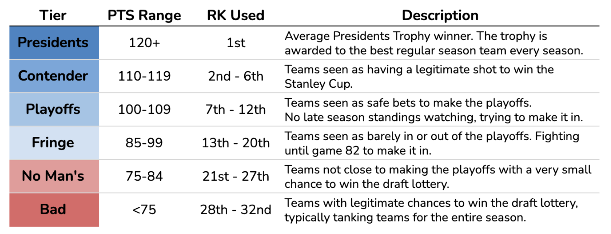Using these categories, we can graph and visualise each team’s history since the 2007-2008 season, since that is the furthest back that Natural Stat Trick has data for. Here’s what the defending back-to-back Stanley Cup champ Florida Panthers look like.
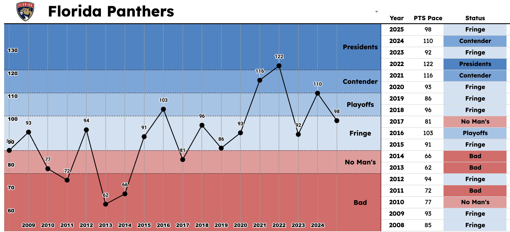Florida’s recent stretch of success can be observed by the points in the blue tiers. Florida won the Stanley Cup in 2025 after being classified as a fringe team in the regular season. This happened since Florida was dealing with major injuries during the regular season to major players. Aaron Ekblad missed 26 games, and Matthew Tkachuk missed 30 games. They also added key playoff contributors late in the year at the trade deadline with players like Brad Marchand and Seth Jones.
Florida’s rebuilding stretch can also be observed by the years spent in the red during the 2013 and 2014 seasons, which helped them acquire star players in Aleksander Barkov and Aaron Ekblad, as mentioned earlier.
A similar pattern appears with Tampa Bay. A few seasons in the red followed by a decade of playoff appearances and two championships.
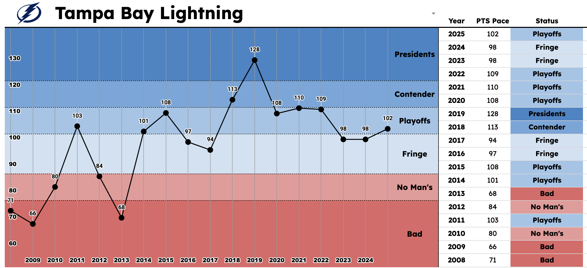The Chicago Blackhawks were the dynasty of the mid-2010s, winning championships in 2010, 2013, and 2015. Since then, it’s been bleak as Chicago entered a rebuild in 2022 and has been in it since.
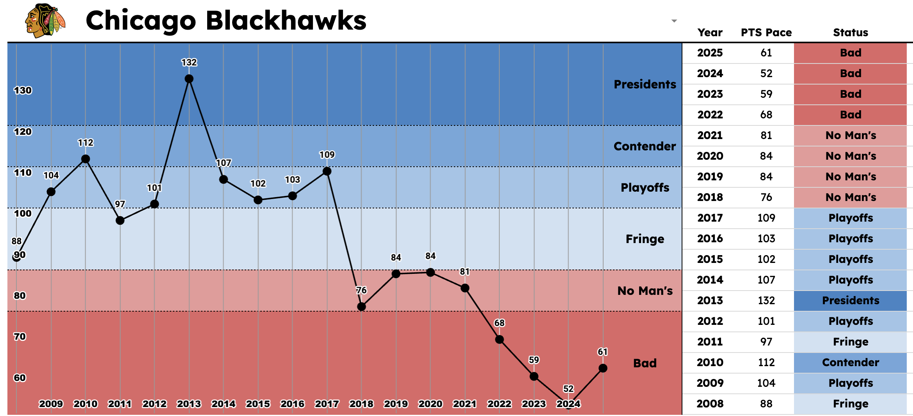The last team I want to showcase is the Buffalo Sabres, who haven’t made the playoffs since 2011. Buffalo’s spent the past decade and a half stuck in the red with barely any hope of getting out. Things looked to be getting better in the 2023 season, but it’s been downhill since then and is on pace to be even worse in this 2025-2026 season, where the Sabres are on pace for another no man’s year with 78 projected points.
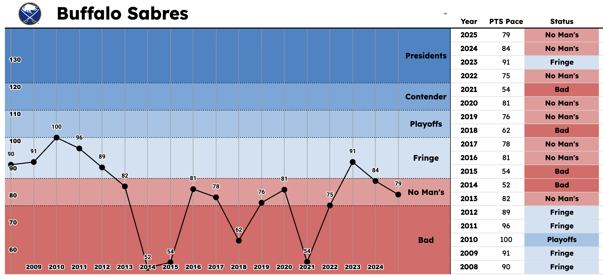I landed on classifying a team in a certain season as entering a rebuild if they fit all three of the following criteria:
- 1) Were in the Bad tier
- 2) The previous season were not in the Bad tier
- 3) The next season was in Bad, or No Man's
- 4) The current season is the first time the previous criteria have been met in the past three seasons.
The goal of these criteria is to actually detect rebuilding teams, not just teams that had a bad off-year and returned to being decent the very next season. A rebuild is something a team commits to, and that is what I want to look at in this project. These criteria yielded 26 different rebuilds being found. Below is a list of the 26 rebuilds:
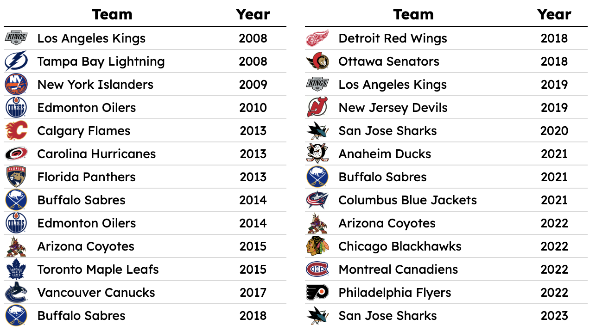This list gives some interesting results. What stands out to me the most is how some teams show up multiple times within a few years, like the Sharks in 2020 & 2023, the Sabres in 2014, 2018, & 2021, and the Oilers in 2010 & 2014. This happens since these teams fell into a rebuild, started improving in the right direction, and then fell back into a rebuild. While this may seem like it should be combined into one rebuild, I disagree.
Using the Sharks as the most recent example (and relevant to Bay Area folks), their two rebuilds can be marked by two distinctive eras. In the 2020 season, the Sharks first started trading players out. They moved Justin Braun to the Flyers, shipped Brendan Dillon to Washington, sent Marleau to Pittsburgh, and traded Barclay Goodrow to Tampa Bay. These moves weakened the Sharks in the short term and allowed them to target higher draft picks in the draft. It wasn’t until 2023 that they started moving big-time players out again. Interestingly enough, the two rebuilds were led by different general managers. Doug Wilson in 2020 and Mike Grier in 2023, who replaced Wilson after he stepped down in 2022. In 2023, Grier moved out San Jose’s biggest names. Franchise icon Brent Burns was traded to Carolina, and star Timo Meier was moved to New Jersey. They also notably traded Adin Hill to Vegas, who backstopped the Golden Knights’ Stanley Cup run that season. So yes, while these rebuilds appear close together, they should be separated since they mark two different moments the Sharks tried to start a rebuild.
Now that our 26 rebuilds are identified, they can be plotted together to create what an average rebuild looks like before and after it gets started. For this step, I decided to look at the five years before and the eight years after. This timeframe was chosen since it allows for young players to fully develop and impact the NHL team in their prime. NHL players hit their prime in their mid-20s, and by looking at the eight years after a rebuild is started, it allows for prospects that a team drafts to be 24-26 years old. For those who don’t know, in the NHL, players are draft eligible at 18 years old. There is no declaring process like the NBA or NFL. Players can also play in college and overseas after being drafted and join the NHL team in their early 20s when developed and NHL-ready.
By calculating the average standings points of our teams for the five years before and through eight years after and plotting it, we get this line.
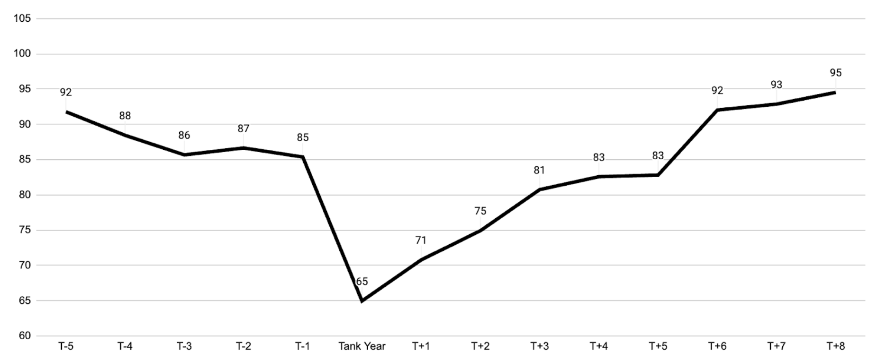It seems, on average, that a rebuild works in making a team better in the long run through some short-term suffering.
This chart is missing the context of one thing, however. What about the teams that don’t decide to rebuild? Believe it or not, not everybody wants to rebuild. There are a few reasons for this, mostly due to the business side of sports. Rebuilding means the team is bad, which means fewer ticket sales. In a sport like hockey, where revenue is driven by ticket sales, significantly more than the other major leagues [Sportico], this puts major strain on smaller markets that won’t always be able to bring fans in like Toronto, Montreal, New York, and Chicago can to name a few. This strain leads to people losing their jobs, specifically general managers and coaches. Ironically, it’s the general manager and coaches who have to be on board and lead a rebuild. In other words, when a GM decides to start a rebuild, there is a high chance that it’ll cost them their job. Not an easy choice after all.
In these cases, managers may decide to improve their team in other ways. Maybe they focus more on free agency or try to acquire younger talent through trades and not tanking at the draft.
This is where having data on the five seasons before a rebuild for our 26 comes in handy. By finding teams that didn’t enter a rebuild BUT matched the profile of our 26 teams before they entered theirs, it gives us a list of teams that looked ready to rebuild but ended up not doing it. Here are the teams that had a season between 82 and 88 points and a five-year average between 83 and 90 points before that, which matches the five years before for our 26 rebuilds, but didn’t enter a rebuild the year after.
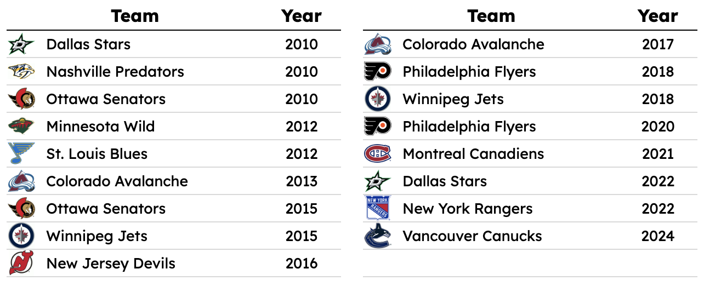Now here’s the fun part: adding the average of this group to our line plot from before:
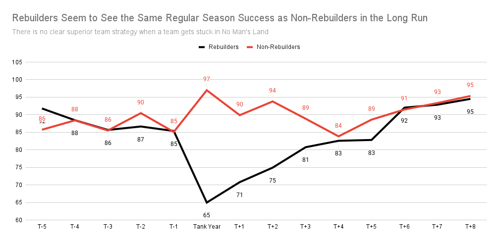There doesn’t appear to be any clear distinction between the two groups. Non-rebuilders seem to stay around the same with some higher peaks in the short term, but end up in the same spot as the rebuilders in the long run.
What this proves is that rebuilding is less about doing it and more about how to do it. Rebuilds fail for many different reasons. The draft is always the main focus for a rebuilding team, so paying more attention to that could give answers on how a rebuilding team may be able to find success in their rebuild through decisions made at the draft.
Most rebuilds are centred around one thing: tanking. It’s a term that gets thrown around a lot in sports, and it means a team that is purposefully being built to be bad to get the best possible draft pick in that summer’s entry draft. The NHL has a lottery system to determine the draft order at the top. The point of it is to discourage extreme tanking since finishing last doesn’t guarantee the number one pick, so making your roster full of guys you find on the side of the street is likely to cause you more harm than good. Tanking is how teams acquire their stars and often how the best players in the league end up on the teams they’re on.
As of writing, Nathan MacKinnon leads the NHL in scoring with 39 points in 23 games. Connor McDavid is second with 34, tied with Macklin Celebrini. Connor Bedard is one point behind, fourth in the league. Can you guess what these players have in common? They were all drafted 1st overall.
Clearly, drafting high is how teams get their hands on the best players, but does drafting high also help teams return to the playoffs? Or does the tanking required to get high picks hurt team construction to a point where a team may have a star player, but have nobody for that star to play with? This question can be answered by seeing how long it took teams to reach 100 standing points after drafting in a certain slot (100 points is the lower bound for what I consider a safe playoff team from the categories before). Here’s what that chart looks like for the top ten picks, the range that tanking teams typically end up selecting in.
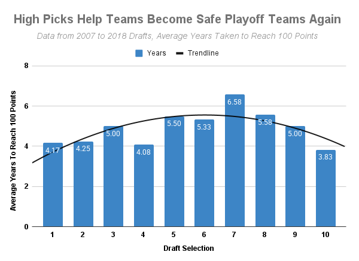This chart makes something that sounds obvious become pretty clear. Having the best players helps a team be good. This is also interesting because the teams picking in the top three are typically worse than the teams who pick 7th and later, but the top three teams still return to the playoffs much faster. The importance of early picks can also be seen by evaluating the value of a draft pick and where Stanley Cup contenders are getting their talent out of the draft.
The website [Hockey Reference] has a great stat called point shares. It uses many different statistics to assign each player an amount of standing points that they were responsible for. Point Shares do a good job of balancing both offence and defence, which makes it very useful for comparing players to each other. This chart uses every drafted player’s point shares per season and their draft slot to create a line of how valuable each draft pick is. An average is calculated for each draft slot first, and then all of those averages are plotted to create the line. Here’s what that looks like.
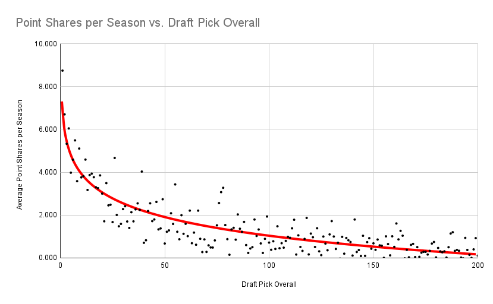This chart is similar to other sports in the fact that the high picks are worth exponentially more than the picks that come later on. As found earlier, superstars are found at the top of the draft and that gets displayed very well here in context to players found later in the draft.
In a perfect world, the next step would be to compare teams that make it to the final and where their playoff point shares are coming from to what would be expected based on draft pick value. Unfortunately, Hockey Reference does not have playoff point share data available on a team’s page. Because of this, playoff games are the next best thing since they won’t favour offence over defence, the main problem with using points, and they won’t favour defensemen over forwards, the main problem with ice time, since defensemen play way more than forwards.
Looking at where players that Stanley Cup final teams drafted themselves were selected, do these successful teams take advantage of any particular round in the draft, or do they perform as expected? The following chart compares what is expected using draft pick value from before and where the games are actually coming from.
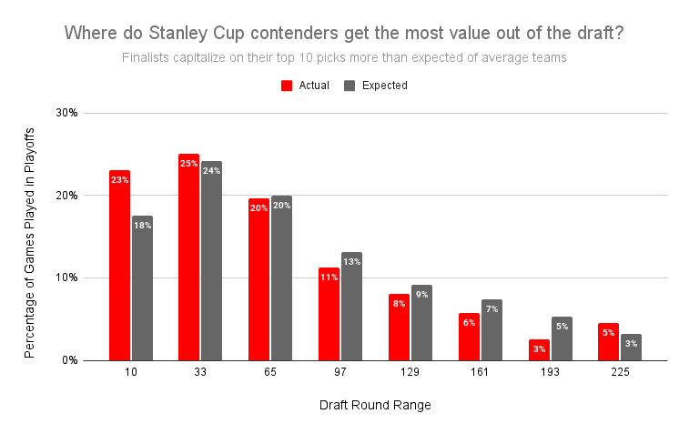What this shows is that finalists get more out of their top ten selections than expected. This lines up with what has been seen throughout this article. Star players are found at the top of the draft. It’s those players who can carry a team out of the basement, and now this shows that these star players also carry teams to playoff success.
It’s also important to note that this chart likely understates just how important the top ten picks are. By using playoff games played as the method to compare players, it makes the impact of star players equal to that of players lower down the lineup. If playoff point share data were available, the gap at the top would be even more extreme since star players' point shares would be worth more than their games played relative to the rest of the team.
One thing is clear that successful rebuilds all have in common: using the top of the draft to find stars. The final thing I want to look at is whether there is any difference between how successful and failed rebuilds approach the pillars of team building: the entry draft, free agency, trading, and waivers. If a major difference can be found, it would raise some interesting questions of why/if that difference contributes to making a rebuild successful.
The first step in this process is to define what a successful and failed rebuild looks like. I’ll define a successful rebuild as a team from the original 26 that finished above the average rebuild line. This makes it easy to split the 26 into two groups that can be compared to each other. Here is the list of 26 again, but now with successful rebuilds highlighted in blue and failed ones in red. Unhighlighted teams either are too early to tell (haven’t reached 8 years post rebuild starting yet) or finished right on the average line.
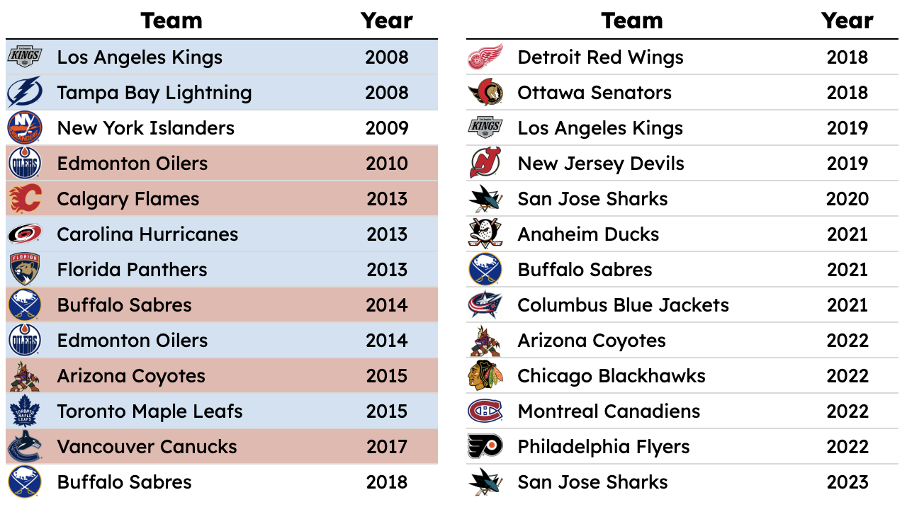This separation gives another way to further see the impact of the top ten picks. In the following chart, the teams are split into successful and failed rebuilds. Every top ten pick made by each team in the three drafts after the rebuild starts is listed with their career point shares per season and what the expected amount would be based on where they were drafted, based on the draft pick value chart from earlier.
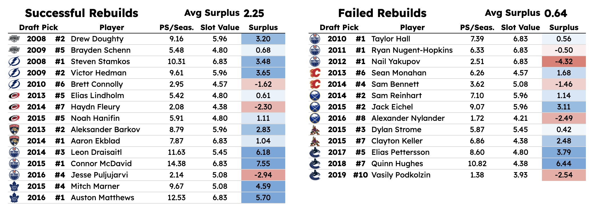Once again, it’s clear just how important it is to hit on the top ten picks. The failed list still has some success stories, but the busts/average picks are way more common than on the successful list. The successful rebuilds average a surplus of 2.25 point shares in their selections, while the failed rebuilds only have a surplus of 0.64.
To compare team composition, I went through every team’s roster that was given a successful or failed designation and found how every player was acquired by the team. The four options were the draft, free agency, a trade, or waivers. I then found the total point shares per season for each group and compared the successful group to the failed group. Here are the results of that.
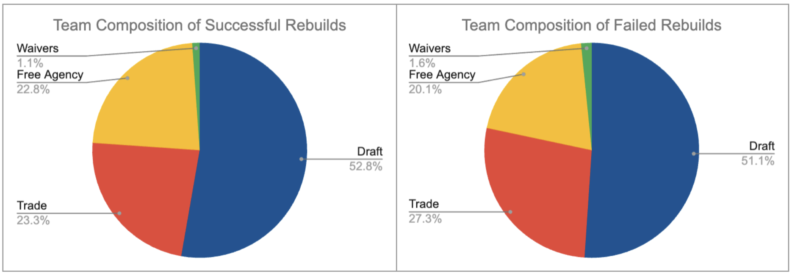The two groups have virtually the same breakdown, something that was a shock to me when initially doing this. I expected the successful rebuilds to have a greater reliance on the draft based on everything I saw earlier with the importance of top ten picks, especially since this chart used point shares and not games played. The truth, however, is that every team is unique, but in the bigger picture, there is no significant difference between teams that succeed and those that fail their rebuilds.
The goal of this project was to find an answer to how teams can rebuild successfully. What I found was a more complicated and nuanced answer. There doesn't seem to be one thing that is a cheat code to building a winner. Through this entire project, I only found one common trait that seems key to a successful rebuild, and that is finding star talent early in the draft. Winning teams are built on the backs of their superstars, superstars that can only be acquired in the draft. Players like this never hit free agency in the NHL and rarely get traded. Deep but unskilled teams don’t win in the playoffs. Those that do are often carried by goalies playing like gods or fortunate injury luck. Other than the top of the draft, a successful rebuild comes down to many good decisions being pieced together. Looking at modern Stanley Cup champions, it’s hard to point to one thing that is completely responsible for their success. It’s always more complicated than that and is a result of many smart decisions all contributing to the championship-calibre roster. And that’s why these results make sense, every champion is built differently, but they’re all centred around their superstars.